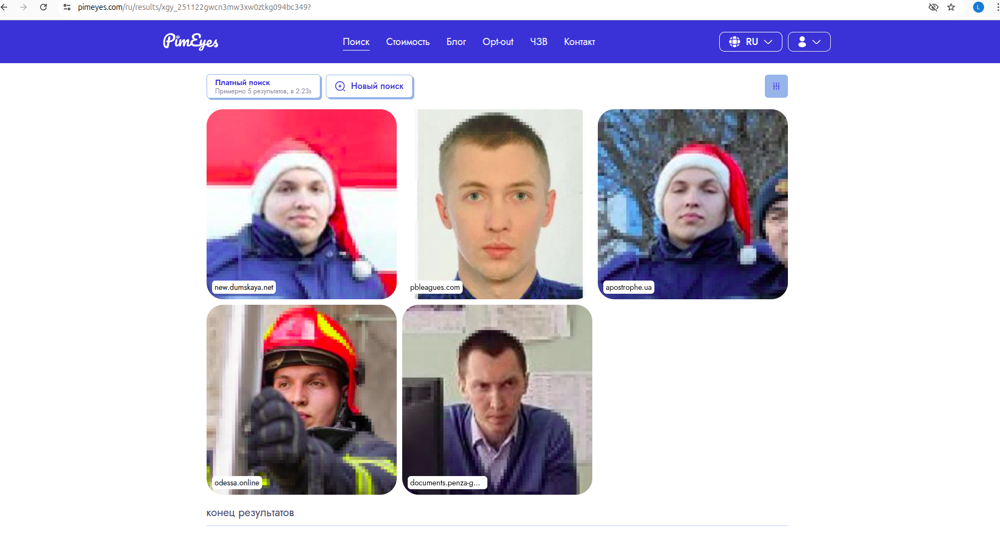

История началась после небольшого ДТП. Нигадяй въехал в мой автомобиль: без трагедий, но ремонт был нужен. Я оформил всё официально через страховку — процедура понятная и стандартная. По условиям страхового договора часть суммы, а именно франшиза, должна была быть оплачена виновником лично.
Я связался с Нигадяем так, как это обычно делает любой нормальный человек: написал ему в Telegram, объяснил ситуацию, приложил документы, попросил выйти на связь. Ответа не было. Сообщения он видел, но игнорировал, как будто проблема исчезнет сама по себе, если просто сделать вид, что её нет.
Так что, когда стало ясно, что нормального диалога не будет, я решил заняться тем, что умею — провести небольшой OSINT-поиск и разобраться, кто такой этот Нигадяй и как с ним всё-таки можно связаться.
Для начала я проанализировал его Telegram-аккаунт. Публичная информация открыта у каждого: история изменения ников, ID, активность, возможные контакты. Всё это даёт базовые ориентиры, от которых можно отталкиваться. Для этого я использовал бот "глаз бога" для поиска информации и "telesint" для того что бы понять его интересы
| Общая информация | |
|---|---|
| ID | 5118779999 |
| Телефон | +380635870983 |
| Имя (Telegram) | Дмитрий |
| ФИО (версия базы) | Чернышенко Дмитрий |
| Дата рождения (Одноклассники) | 01.11.1991 |
| Возраст | 31 |
| Пол | Мужской |
| Город | Kyiv |
| Страна | Украина |
| Интересовались этим | 1 |
| История изменения имени | |
| 16.07.2025 | @dimmchik12847, Дмитрий, 5118779999 |
| 13.05.2024 | @Dimchik1223, 5118779999 |
| 13.05.2024 | @dimchik444, 5118779999 |
| Дополнительные данные | |
| СНИЛС | — |
| ИНН | — |
| — | |
| Автомобили | — |
| Личности | Vertol Kuznecov, 01.11.1991 |
| Паспорт | — |
| Адрес | — |
| Место рождения | — |
| Водительское удостоверение | Международный сервис перевозок 2024 |
| Устройство | |
| Версия приложения | 4.28.1 |
| Версия ОС | Android 11 |
| Модель устройства | Redmi Note 9 Pro (joyeuse) |
| Оператор связи | |
| Страна | Украина |
| Оператор | Life:) |
| Телефонная книга (возможные имена) | |
| Vertol Kuznecov, Дима Авенсис, Дима Автосалон, Дима Дснс Одесса, Дима Чернешенко, Дима Чернишенко Учебка, ДимаЧернешенко, Кашеглот, Пропущенный 2, чернышенко | |
| Одноклассники | |
| OID | 559427304684 |
| Профиль | OK профиль |
| Дата создания | 2013-05-18 |
| Дата обновления | 2013-05-16 |
| Telegram | |
| Telegram ID | 5118779999 |
| Телефон | +380635870983 |
| Логин | dimmchik12847 |
| Дата изменения | 2025-07-16 13:57:00 |
| Профиль | Telegram |
| TikTok | |
| ID | 7424640793065522182 |
| Логин | alex838745 |
| Профиль | TikTok |
| Открытые группы | |
|
@sexmeetodessa – Одесса: спонсоры и содержанки @bpu_info – Чат Бойкот Пожежних України @sponsoryodessy – Содержанки Одессы @spilkyvanya_v_davinshi – Шо шо чат | |
Несколько групп явно намекали на определённую сферу деятельности, связанную с пожарной службаой. То есть появлялась первая гипотеза о возможной профессии Нигадяя.
Но подтверждения пока не было — нужно было искать дальше.
Я скачал его аватар и запустил реверс-поиск. Использовал всё, что доступно:
Зато сервис распознавания лиц https://pimeyes.com/ дал сразу несколько совпадений — одни и те же фотографии человека в форме, сделанные на разных событиях, и все — с новостных сайтов.

Контекст снимков совпадал с теми интересами, что были найдены ранее. Картинка начала собираться.
link1
link2
link3